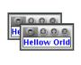
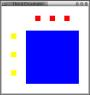
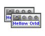
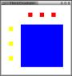

|  |  |

| |
| elementary example | images and layout | more involved layout | using Swing objects |
| context | - Java GUI & File I/O - | author |
The zio package is a set of simplified Java classes for interacting with users and files. Java's own API is flexible and complicated. The zio package is less flexible and much less complicated. You can use zio to get started with Java. If your needs are simple enough, you can stay with zio. If not, you can migrate one step at a time to Java's full API because zio was designed to work with existing Java classes. Zio is released under the Open Software License, Version 2.1.
The package was created for educational purposes. However, it seems to be robust enough to use with some real world applications. Think of the package as beta quality. Within the just mentioned link you will find this sequence of beginner examples. Teachers interested in using zio and needing more examples should contact me
For those who can write Java programs but want some help with GUI programming here are four GUI examples. Click on the following images to see the Java code which generated them. The code is carefully commented. The examples are of increasing complexity.
|  |  |
| |
| elementary example | images and layout | more involved layout | using Swing objects |
The package adds no run-time overhead to windows that are already created and doesn't seem to add a lot to the setup time. You can run the examples by copying them and compiling them. You will need to download zio. It is available in an easy to use jar file.
The package itself consists of classes for
| Text I/O | files, sockets, and more | Input, Output, and InOut classes |
|---|---|---|
| Image I/O | files | InOut class |
| GUI programming | for beginners |
DialogWindow and DisplayWindow classes Zio.ask and Zio.tell methods |
| " | simple, flexible layout | all classes beginning with Z |
| " | integrating other Swing components | ZComponent |
The GUI classes have an unusual approach to laying out objects that is based on two basic concepts: slices and suffixes.
To serve the needs of beginners and professionals alike, there are two levels of formal documentation for the zio package:
(This documentation promises two graphics classes ZPixel and GraphingWindow that will not be available anytime soon.)
These differ not only in what they present but in how they present it.
Again, here's the link for downloading zio, an open source Java package for GUI programming with file I/O. Use it to avoid Swing or to ease your way into Swing.
| context | September 1, 2005 | author |